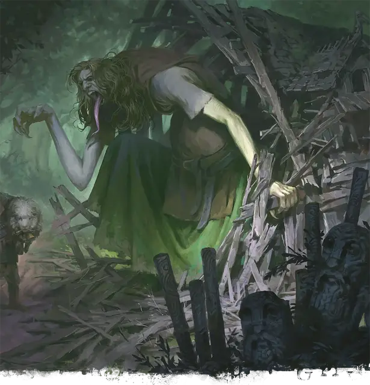

Фенсир пожиратель
Fensir Devourer
Огромный Небожитель, обычно хаотично-нейтральный

Класс Доспеха 17 (природный доспех)
Хиты 138 (12к12 + 60)
Скорость 40 футов
| мод | спас | ||
|---|---|---|---|
| СИЛ | 20 | +5 | +5 |
| ЛОВ | 10 | +0 | +0 |
| ТЕЛ | 21 | +5 | +5 |
| мод | спас | ||
|---|---|---|---|
| ИНТ | 10 | +0 | +0 |
| МДР | 14 | +2 | +2 |
| ХАР | 11 | +0 | +0 |
Навыки Восприятие +8, Выживание +8
Чувства тёмное зрение 60 футов, пассивное Восприятие 18
Языки Общий, Великаний
Опасность 8 (3900 опыта)
Бонус мастерства +3
Особенности
Смертоносное проклятие. Когда фенсир начинает свой ход с 0 хитов и он не регенерирует, он накладывает проклятие на тех, кто его окружает. Каждое существо, находящееся в пределах 30 футов от фенсира, когда он умирает, должно совершить спасбросок Харизмы Сл 13, становясь проклятым на следующие 24 часа, в случае провала.
Будучи проклятым таким образом, существо не получает никаких преимуществ от окончания короткого или продолжительного отдыха. В конце каждого часа существо должно преуспеть в спасброске Харизмы Сл 13, иначе получит 11 (2к10) урона психической энергией.
Регенерация. Фенсир восстанавливает 10 хитов в начале своего хода, если он не находится под солнечным светом. Если фенсир получает урон кислотой или огнем, эта особенность не действует в начале следующего хода фенсира. Фенсир умирает только если начинает ход с 0 хитов и не может регенерировать.
Гиперчувствительность к солнечному свету. Когда фенсир начинает свой ход под солнечным светом, он должен преуспеть в спасброске Телосложения Сл 15, иначе станет окаменевшим до тех пор, пока фенсир больше не окажется на солнечном свету.
Действия
Мультиатака. Фенсир совершает две атаки Разрывом, Валуном или их комбинацией.
Разрыв. . Рукопашная атака оружием: +8 к попаданию, досягаемость 10 футов, одно существо. Попадание: 21 (3к10 + 5) рубящего урона.
Валун. . Дальнобойная атака оружием: +8 к попаданию, дистанция 60/240 футов, одна цель. Попадание: 18 (2к12 + 5) дробящего урона. Если цель - существо Большого размера или меньше, оно должно преуспеть в спасброске Силы Сл 16, иначе упадёт ничком. После того, как фенсир метнёт валун, совершите бросок к6; при результате "4" или ниже у фенсира заканчиваются валуны для метания.
Описание
Приводить троллей в место, где ничто по-настоящему никогда не умирает, кажется откровенно плохой идеей. О чем думали эти великаны?
- Бигби
И все же, можем ли мы справедливо сказать, что существование фенсиров “откровенно плохо”? Кто-то может возразить, что они являются эволюционным шагом вперёд по сравнению с троллями. По крайней мере, разнообразие жизни в мультивселенной увеличилось, и были обнаружены новые чудеса. Это плохо только в том случае, если вы считаете, что правильным является небольшая вселенная, укладывающаяся в рамки вашего узкого миропонимания.
- Дианкастра
Давным-давно группа ледяных великанов возглавила поход троллей, чтобы завоевать расположение Аннама, завоевав внешний мир Асгард. Кампания по завоеванию быстро провалились, но атакующие обнаружили ключевую особенность Асгарда: существа, убитые на этом плане, возвращаются к жизни на следующем рассвете. Таким образом, вторжение великанов стало частью вечной битвы, которая бушует по всему миру. Тролли, чья фундаментальная природа была изменена постоянной регенерацией и перерождением под воздействием энергии Асгарда, медленно превращались в совершенно новых существ: фенсиров.
Родство фенсиров и троллей едва ли заметно по их внешнему виду. У них сохранились выдающиеся носы и оттенок зеленого в коже, но в остальном они напоминают относительно небольших ледяных или каменных великанов. Они используют доспехи и оружие, подобные тем, что используют другие бойцы на Асгарде в вечной битве.
Трансформация, которая создала фенсиров, наделила их странными способностями к регенерации: их регенерация не работает при солнечном свете, и на самом деле солнечный свет может превратить этих существ в камень.
Фенсир пожиратель
Некоторые фенсиры претерпевают трансформацию, прожив в Асгарде по меньшей мере тысячу лет. Они быстро вырастают до высоты в 25 футов, подпитываемые ненасытным голодом. Эти фенсиры пожиратели используют свои огромные размеры и силу, чтобы сокрушать врагов. Они также могут накладывать зловещее проклятие в свои последние мгновения.